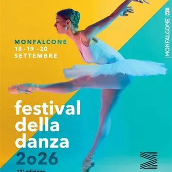

da ven 18 set a dom 20 set
Festival della Danza Monfalcone
Dal 18 al 20 settembre 2026 torna a Monfalcone il Festival della Danza, che quest'anno giunge alla sua 12^ edizione! Piazze, palestre e altri spazi cittadini si preparano ad ospitare esibizioni, masterclass, spettacoli, incontri e momenti dedicati alle diverse espressioni della…
 Indicazioni
Indicazioni
- Costi e prenotazioni
- Costo non indicato · Prenotazione non indicata
- Programma
- Programma da verificare. Apri la fonte ufficiale per orari e possibili aggiornamenti.
- In caso di maltempo
- Nessuna indicazione specifica pubblicata.
- Note
- Acquisito automaticamente dalla fonte.
L’EVENTO
Descrizione completa
Dal 18 al 20 settembre 2026 torna a Monfalcone il Festival della Danza, che quest'anno giunge alla sua 12^ edizione!
Piazze, palestre e altri spazi cittadini si preparano ad ospitare esibizioni, masterclass, spettacoli, incontri e momenti dedicati alle diverse espressioni della danza, coinvolgendo numerose scuole, compagnie, professionisti e centinaia di giovani talenti. L'edizione 2026 rafforza la vocazione internazionale del Festival: a questa tre giorni partecipano, infatti, compagnie e ballerini provenienti da tutta la Regione, ma anche dalla Slovenia, dall’Austria e dalla Svizzera.
L’apertura ufficiale del Festival è in programma venerdì 18 settembre 2026, alle ore 18.00, in Piazza della Repubblica con il Flash Village Dance: dopo i saluti istituzionali delle autorità cittadine, i danzatori e le compagnie premiate al Trieste International Winter Dance 2026 si esibiranno in uno spettacolare "Dance Show".
Anche quest'anno il cuore della manifestazione è il Villaggio della Danza in Piazza della Repubblica, appuntamento ormai consolidato del Festival e punto d’incontro tra pubblico, professionisti, scuole ed espositori specializzati. Tra le novità di quest'edizione: la Pole Dance Experience, a cura di Pole Dance Trieste, uno spazio dedicato alla disciplina sportiva che unisce ginnastica e acrobatica, con performance, mini sessioni, prove e lezioni fusion. Domenica il programma comprende, inoltre, il Dance Academy Award Italy, dedicato all’eccellenza delle scuole italiane, e lo spettacolo finale.
La 12ì edizione del Festival riserva ampio spazio alla formazione con un programma di masterclass in programma sabato 19 e domenica 20 settembre presso il Centro Sportivo Integrato e nella Sala Polifunzionale del Ricreatorio Mons. Foschian. Tra i grandi nomi della danza presenti: Elisa Settimo, Sabrina Borzaga, Oliviero Bifulco, Antonina Randazzo e Ugo Ranieri, Claudia Pompili, Matteo Addino, Viola Senatore e Francesco Corvino, Alessio Guerra e Gianluca Paradiso, con proposte che spaziano dalla danza classica al contemporaneo, dal modern al musical, dalla contact improvisation alla recitazione applicata alla danza. La partecipazione alle masterclass è aperta sia agli allievi delle scuole presenti sia a ballerini esterni, fino a esaurimento dei posti disponibili.
IL PROGRAMMA
Programma e orari
Appuntamenti raccolti dalle fonti elencate. Dove manca un orario, non è ancora disponibile in questa scheda.
Programma pubblicato
- Dal 2026-09-18 al 2026-09-20
INFORMAZIONI UTILI
Prima di partire
- Controllare la fonte prima di partire.
ORGANIZZAZIONE